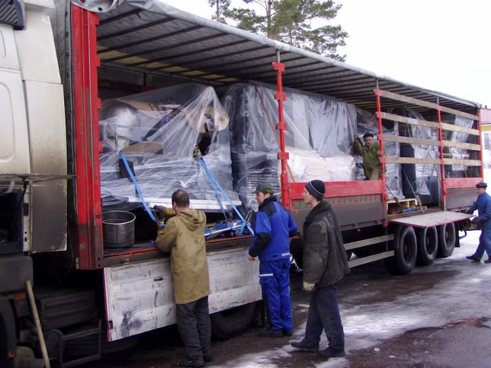
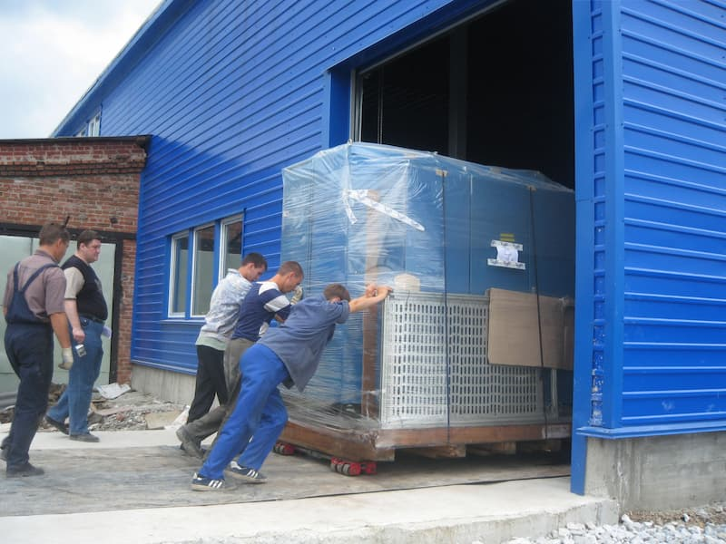
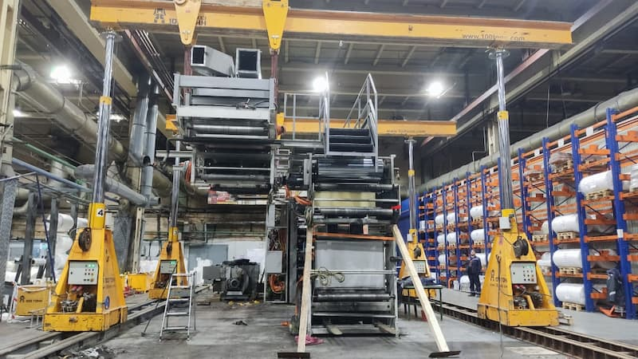
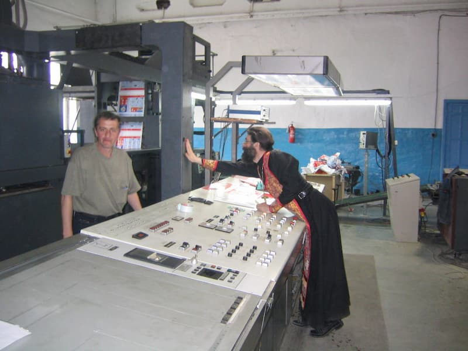
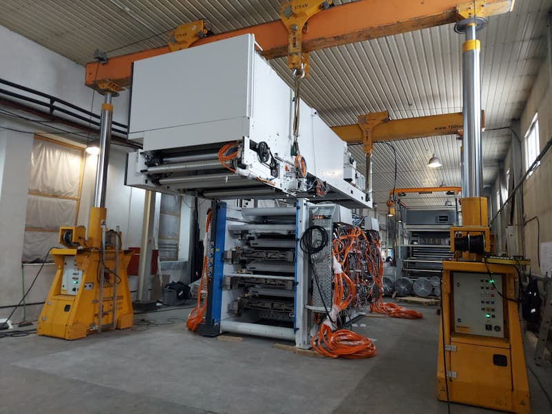
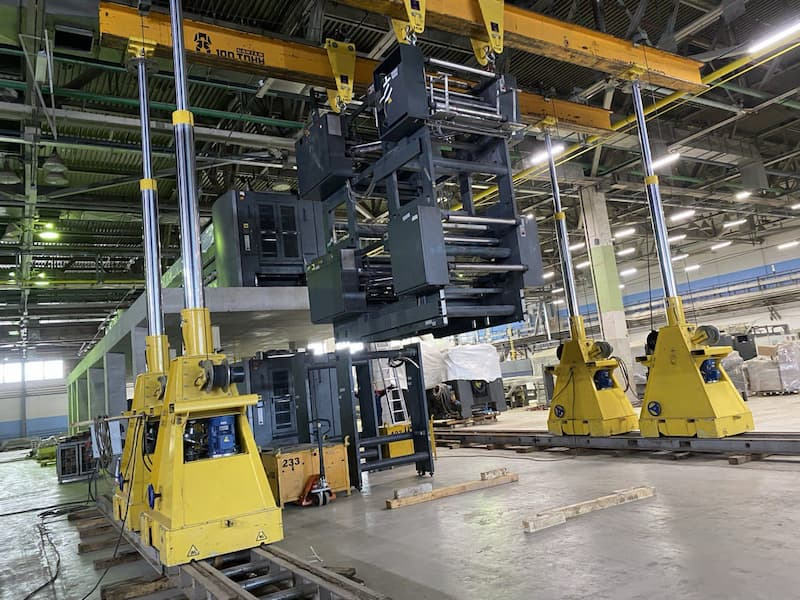

Пионеры рынка
Типография «Лазурь» всегда искала, как быть лучшей для своих клиентов. В далеком 2004 году компания решила сделать большой шаг в развитии — приобрести рулонную (ролевую) печатную машину. В такой машине бумага подается не в виде листов, а в виде рулона. Масса непрерывного полотна может достигать одной тонны! На выходе стоит фальцаппарат, который рубит рулон (или роль, как говорят печатники) на нужный формат. Такая технология значительно ускоряет рабочий процесс.
«До нас на Урале ни в одной типографии не было ролевого полиграфического оборудования. Не было и специалистов, которые умеют с ним работать. Мы обратились в компанию «Принтэксперт», чтобы нам подобрали печатную машину с необходимыми характеристиками. И такая нашлась в Финляндии — Heidelberg WEB-8», — вспоминает Татьяна Деева, учредитель ИПК «Лазурь»
WEB-8 может выдавать до 25 тысяч экземпляров в час (имевшиеся до этого машины обеспечивали 10 – 15 тысяч). Благодаря газовой сушке может печатать на мелованной бумаге, причем краска будет высыхать мгновенно. А универсальный аппарат для фальцовки изготавливает любой формат от А6 до А2. Одним словом, не машина, а сказка!
Но чтобы сказка стала былью, предстояло разобраться в тонкостях монтажа этого сложного инженерного агрегата, состоящего из нескольких секций. К счастью, «Лазури» не пришлось заниматься этим в одиночку. Специалисты «Принтэксперта» (ныне группы компаний «100 ТОНН») предоставили полный сервис — от поставки машины до ее запуска в эксплуатацию.

Ювелирная точность
Сейчас монтаж подобной ролевой машины был бы для «100 ТОНН» одним из рядовых проектов, но по тем временам оборудование было практически уникальным, а компания довольно молодой. К счастью, уже тогда в ней работали опытные печатники. И они взялись за дело.
Ответственность огромная! В такелажно-монтажной компании до сих пор с благодарностью вспоминают то доверие, которое оказало руководство «Лазури». Ведь по сути с этой работы и началось успешное продвижение «Принтэксперта», а затем и «100 ТОНН» на полиграфическом рынке.
«Теперь даже стыдно вспоминать, с каким набором инструментов мы приехали на монтаж WEB-8. Можно сказать, с голыми руками, — признается Сергей Томилов, главный инженер «100 ТОНН ПРОМЫШЛЕННЫЙ ТАКЕЛАЖ». — Такое оборудование нужно выставлять с точностью до сотых миллиметра — это в пять раз тоньше человеческого волоса. А у нас были только стандартные мерители. Помогло то, что до полиграфии я работал в инструментальном производстве и понимал, как добиться нужных допусков».
Забегая вперед, скажем, что выверка удалась. За 21 год эксплуатации, секции WEB-8 ни разу не пришлось перевыставлять, хотя проблемы из-за неточного позиционирования узлов — частая болезнь подобного оборудования.
Руководство «Принтэксперта» учло опыт монтажа WEB-8 и сразу докупило всю необходимую оснастку и инструмент. К монтажу следующей ролевой машины компания была во всеоружии.

Установка тяжелых узлов
Отдельно стоит рассказать о том, как перемещали и устанавливали крупногабаритные элементы машины. Сейчас в арсенале «100 ТОНН» самый большой в России парк гидравлических портальных систем. С таким оборудованием можно легко и безопасно поднимать и вращать тяжелые грузы даже в самых тесных помещениях. Но тогда порталов в России еще не было (спустя четыре года это оборудование первым привезет в страну всё тот же «Принтэксперт»). Поэтому такелажные операции пришлось выполнять вручную, с помощью лебедок и прочих приспособлений.
Самый высокий блок машины — размотка — не проходил во въездные ворота. Его занесли в помещение в горизонтальном положении, а потом перевели в вертикальное. Для этой операции у местной картографической фабрики, изготавливающей карты и глобусы, взяли в аренду самодельное механическое устройство, которое можно назвать примитивным прообразом портальной системы.

Непростая победа
Монтаж WEB-8 занял около трех месяцев. Собрали ее быстро, но потом возникли проблемы с запуском электрической части. Плюс к этому машина была не новой, а прежние хозяева не слишком-то следили за ее состоянием. В «Лазури» же оборудование всегда содержится в идеальной чистоте, так что прибывшей из-за рубежа технике устроили генеральное техобслуживание.
У всех, кто участвовал в монтаже и запуске, было трепетное отношение к новоприбывшей. Каждый старался сделать свою работу правильно, бережно. Когда WEB-8 начала оживать, крутиться, команда сотрудников «Лазури» и «Принтэкспета» была по-настоящему счастлива. Типография пригласила батюшку, чтобы он освятил машину, а заодно окрестил специалистов, которым предстояло ее эксплуатировать.

«В 2004 году работа по монтажу и поставке WEB-8 определенно была для нас сложной, — вспоминает Владимир Орлов, член совета директоров ГК «100 ТОНН». — И нам как раз нужен был клиент, готовый рискнуть сработать с нами по большой рулонной машине (а тогда она нам казалась большой). Этим проектом мы, как и «Лазурь», взламывали новый для нас сегмент.
Мы попытались минимизировать риски, наняв шефмонтажников из Финляндии, но в итоге запускать машину пришлось нашему главному инженеру и его команде. У Сергея Геннадьевича Томилова был некоторый опыт обращения с подобным оборудованием, к тому же он лучший механик из всех кого я знаю. Насколько помню, заработать на этом контракте нам не удалось, но мы неплохо заявили о себе на рынке и в следующие годы поставили и запустили много рулонных машин».
«100 ТОНН» сегодня
С 2004 года началось уверенное развитие «Принтэксперта» в сфере поставки, монтажа и обслуживания печатного оборудования. С покупкой портальной системы в 2008 году появилось много заказов на монтаж и такелаж в других отраслях, и на смену «полиграфическому» имени пришел бренд «100 ТОНН».
Сейчас группа компаний занимается монтажом технологического оборудования, установкой и перемещением тяжелых производственных единиц. В штате холдинга около 500 сотрудников, на карте реализованных проектов — 12 стран. Специалистам под силу сложнейшие такелажные операции. Например, они могут поднять 100-тонный барабан на высоту 40 метров, или собрать пресс массой 800 т в цехе, где практически нет свободного места. «100 ТОНН» успешно монтирует гигантские производственные линии металлургических заводов, горно-обогатительных и целлюлозно-бумажных комбинатов.
При этом монтаж, демонтаж и релокация полиграфического оборудования остается одним из ключевых направлений бизнеса. Компания монтирует под ключ листовые, ролевые, пакетоделательные, флексопечатные, сборочно-брошуровочные и другие машины. После первенца WEB-8 команда собрала еще две рулонных машины в «Лазури» и около трех десятков — в других типографиях по всей стране и за рубежом. Также к 2025 году на счету «100 ТОНН» не менее тридцати запущенных флексопечатных машин. Ежегодно эта сумма прирастает по меньшей мере на пять единиц.

Надежный партнер полиграфистов
Есть несколько причин, которые делают «100 ТОНН» — оптимальным подрядчиком для монтажа нового и перебазировки бывшего в употреблении полиграфического оборудования.
Во-первых, опыт сотрудников. Их умение педантично выполнять каждый этап трудоемкого механического и электромонтажа позволяет запускать машины с первого раза. А, значит, гарантировать заказчику соблюдение сроков. В штате достаточно опытных рабочих и инженеров, чтобы параллельно собирать печатные прессы на нескольких объектах. При этом компания постоянно повышает квалификацию специалистов со стажем и обучает молодежь, специально набранную под полиграфические проекты.
Во-вторых, техническое оснащение. Это уже упомянутые гидравлические портальные системы, с помощью которых можно творить чудеса грузоподъема в самых маленьких помещениях. Системы сдвига, позволяющие перемещать тяжелые узлы по горизонтали при сложной планировке цеха либо ограничениях по нагрузке на поверхность пола (особенно актуально, когда оборудование устанавливают на втором – третьем этаже). Высокоточные лазерные приборы для выверки и центровки. Великое множество инструмента и такелажной оснастки, позволяющей работать точно, безопасно, без лишних физических усилий.
В-третьих, отношение к делу. Спустя десятилетия специалисты «100 ТОНН» всё так же трепетно относятся к каждой задаче, поставленной клиентами. Здесь привыкли дорожить доверием заказчиков и неизменно оправдывать его.
